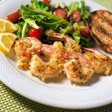

Perri's Garlic-Parmesan Shrimp

Description
This crispy shrimp recipe from Perri is perfect for any garlic-parmesan lovers
out there! Suitable with pasta and salads, it is a tasty addition
to your entree. Double the recipe and bring to any celebrations and you'd
be the talk of the party!
Ingredients
- nonstick cooking spray
- 1 cup dry bread crumbs
- 1 cup shredded Parmesan cheese
- 2 tablespoons dried parsley
- 1 1/2 teaspoons garlic powder
- 1 pound large shrimp, peeled and deveined
- 2 tablespoons butter, melted, or more to taste
Steps
- Preheat the oven to 350 degrees F (175 degrees C). Spray a 9x13-inch glass
casserole dish with nonstick cooking spray.
- Combine bread crumbs, Parmesan cheese, parsley, and garlic powder in a large
resealable plastic bag. Seal and shake to mix ingredients together. Add shrimp
and shake to coat.
- Lay shrimp flat in the prepared baking dish. Sprinkle with any bread crumb
mixture remaining in the bag. Drizzle melted butter over the top.
- Bake in the preheated oven until starting to crisp, 15 to 20 minutes. Switch to broil
setting until topping is light brown, 2 to 3 minutes.